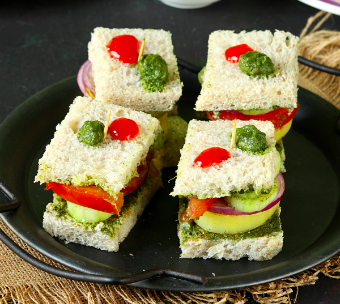

Bombay Sandwich - Quick snack hack

Description - Easy Peasy Lemon Squeezy
It's an easy yet delightful bread recipe. It hardly takes anytime and trust me it's the best way to wake up those sleeping taste buds. It's sweet, salty, buttery, spicy and filled with goodness of vegetables like beetroot, cucumbers, onions, tomatoes and potatoes. So let's get started..
Ingredients
- White Bread
- Green Chutney - Follow this recipe to know how to make it
- Butter - as per taste
- 1 Cucumber - cut thin and round slices
- 1 Boiled Potato - peeled and sliced in thin round circles
- 1 beetroot - peeled and sliced in thin round circles
- 1 onion - peeled and thin rounded circles
- Salt, Chat masala, cumin seed powder and black pepper powder - as per taste
Steps: Let's get to chase
It's very easy, no rocket science. As pre-prep, cut off the sides of the bread so that only the soft white center remains and hardened backed sides are removed. This is not necessary, so you can skip if you don't feel like.
- Step 1: Apply generous amount of butter on both slices of bread. Add some green chutney on the bread slices. So yes, first the butter then the chutney. Now, let's go on to step 2.Don't let that bread soak in that chutney for a long time else it will go soggy and trust me a soggy sandwich doesn't taste good.
- Step 2: Let's add our veggies. Now let's lay these potato slices on one of the bread. Sprinkle some salt and black pepper. Let's add some Onion, tomato and cucumbers. Yes, you need to make it like a stack of veggies. First goes the potato. Over it goes the onions, followed by tomato and cucumbers.
- Final Step: Let's add some chat masala, cumin seed powder and sprinkle some salt. Cover it with the other slice and make one horizonal cut and a vertical cut. This should give you 4 small bite sized pieces.
Voila! It's ready. Garnish your sandwich with dots of tomato ketchup and some green chutney on the bread slices. Serve immediately.
Enjoy!